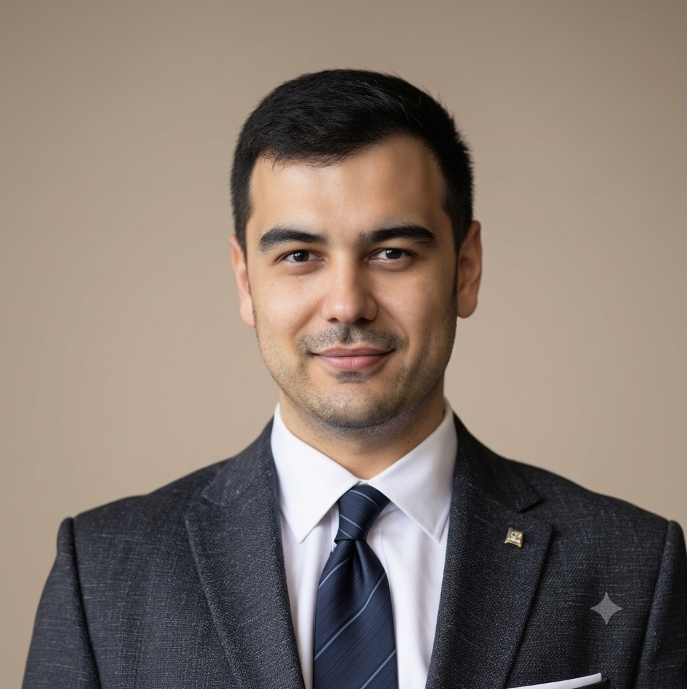

Welcome. This is where I share my story and what I've learned along the way, with the hope of helping more Uzbek immigrants find their way into medicine.
Xush kelibsiz — bu yerda men o'z hikoyam va o'rgangan narsalarimni ulashaman, ko'proq o'zbek muhojirlariga tibbiyotga yo'l topishda yordam berish umidida.

I grew up in Tashkent, Uzbekistan, and moved to the United States alone at 19. Community college in Brooklyn, then PA school, then five years of clinical practice, then medical school at NYU. Along the way I learned patience from patients who trusted me before I had all the answers, and something closer to empathy from immigrant families who reminded me of my own.
I matched into Internal Medicine at UT Southwestern and am moving to Dallas. I'm leaning toward cardiology, since cardiovascular disease affects the communities I come from more than most, and it's an area I want to spend my career working on.
View full CVMen Toshkentda tug'ilganman. 19 yoshimda AQShga yolg'iz ko'chib keldim. Bruklindagi kollejdan shifokor yordamchisi maktabigacha, besh yillik klinik tajribadan NYU tibbiyot maktabigacha. Bu yo'lda meni ishongan bemorlardan sabr, o'z oilamni eslatgan muhojir oilalardan esa hamdardlikka yaqin narsa o'rgandim.
UT Southwestern tibbiyot markazida ichki kasalliklar rezidenturasiga qabul oldim va Dallasga ko'chib o'tyapman. Kardiologiyaga moyilman — yurak-qon tomir kasalliklari men kelgan jamoalarga ko'proq ta'sir qiladi, va bu men karyeramni bag'ishlamoqchi bo'lgan sohadir.
To'liq CVDiagnosis, treatment, and practical guidance for families.
Tashxis, davolash va oilalar uchun amaliy qo'llanma.
Breaking the silence on mental health in our communities.
Jamoalarimizda ruhiy salomatlik haqida sukunatni buzish.
Marijuana, opioids, stimulants: facts, law, harm reduction.
Faktlar, qonun, xavfsizlik.
Anchoring, premature closure, and the invisible forces shaping decisions.
Qarorlarni shakllantiradigan ko'rinmas kuchlar.
A Soviet physiologist performed the first heart transplant decades before Barnard.
Barnarddan o'n yillar oldin birinchi yurak ko'chirish.
Whether it's about research, the Uzbek Health Hub, or sharing stories, I'd love to hear from you.
Tadqiqot, O'zbek sog'liq markazi yoki hikoyalar haqida bo'lsin — sizdan eshitishni xohlayman.